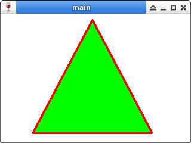

Steward
分享是一種喜悅、更是一種幸福
程式語言 - Netwide Assembler (NASM) - Win32 API (NASMX) - Draw Polygon
參考資訊：
https://masm32.com/board/index.php
https://www.nasm.us/xdoc/2.13rc9/html/nasmdoc0.html
Polygon()可以用來繪製多邊形，需要傳入的資訊是一個座標點陣列，用來描述有哪些點需要被連接
main.asm
%include "/opt/wadk/nasmx/inc/nasmx.inc"
%include "/opt/wadk/nasmx/inc/win32/msvcrt.inc"
%include "/opt/wadk/nasmx/inc/win32/windows.inc"
%include "/opt/wadk/nasmx/inc/win32/gdi32.inc"
%include "/opt/wadk/nasmx/inc/win32/user32.inc"
%include "/opt/wadk/nasmx/inc/win32/kernel32.inc"
global _start@8
section .data
hWin DD 0
hInstance DD 0
defWndProc DD 0
pCmdLine DD 0
szCaption declare(NASMX_TCHAR) NASMX_TEXT("main"),0
pt times sizeof(POINT) * 3 DB
NASMX_ISTRUC msg, MSG
NASMX_IENDSTRUC
NASMX_ISTRUC ps, PAINTSTRUCT
NASMX_IENDSTRUC
section .text
proc WndProc, DWORD hWnd, uint_t uMsg, DWORD wParam, DWORD lParam
locals
local hdc, DWORD
local pen, DWORD
local brush, DWORD
endlocals
switch DWORD [argv(.uMsg)]
case DWORD WM_PAINT
invoke BeginPaint, [argv(.hWnd)], ps
mov [var(.hdc)], eax
invoke CreatePen, PS_SOLID, 3, 0ffh
mov [var(.pen)], eax
invoke CreateSolidBrush, 0ff00h
mov [var(.brush)], eax
invoke SelectObject, [var(.hdc)], [var(.pen)]
invoke SelectObject, [var(.hdc)], [var(.brush)]
mov DWORD [pt + (sizeof(POINT) * 0) + POINT.x], 150
mov DWORD [pt + (sizeof(POINT) * 0) + POINT.y], 10
mov DWORD [pt + (sizeof(POINT) * 1) + POINT.x], 50
mov DWORD [pt + (sizeof(POINT) * 1) + POINT.y], 200
mov DWORD [pt + (sizeof(POINT) * 2) + POINT.x], 250
mov DWORD [pt + (sizeof(POINT) * 2) + POINT.y], 200
invoke Polygon, [var(.hdc)], pt, 3
invoke EndPaint, [argv(.hWnd)], ps
invoke DeleteObject, [var(.pen)]
invoke DeleteObject, [var(.brush)]
break
case DWORD WM_CLOSE
invoke DestroyWindow, [argv(.hWnd)]
break
case DWORD WM_DESTROY
invoke PostQuitMessage, 0
break
default
invoke CallWindowProc, [defWndProc], [argv(.hWnd)], [argv(.uMsg)], [argv(.wParam)], [argv(.lParam)]
endswitch
endproc
proc WinMain, DWORD hInst, DWORD hPrevInst, DWORD CmdLine, DWORD CmdShow
locals none
invoke CreateWindowEx, WS_EX_LEFT, WC_DIALOG, szCaption, WS_OVERLAPPEDWINDOW | WS_VISIBLE, 0, 0, 320, 240, NULL, NULL, NULL, NULL
mov [hWin], eax
invoke SetWindowLong, [hWin], GWL_WNDPROC, WndProc
mov [defWndProc], eax
do
invoke DispatchMessage, msg
invoke GetMessage, msg, NULL, NULL, NULL
while eax, !=, 0
mov eax, DWORD [msg + MSG.wParam]
endproc
proc start, DWORD argc, DWORD argv
locals none
invoke GetModuleHandle, NULL
mov [hInstance], eax
invoke GetCommandLine, NULL
mov [pCmdLine], eax
invoke WinMain, [hInstance], NULL, [pCmdLine], SW_SHOWNORMAL
invoke ExitProcess, 0
endproc
完成
